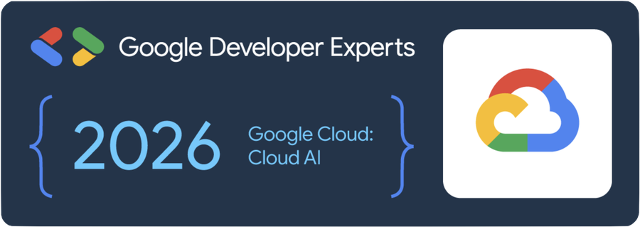

Building production ML inference systems · Google Developer Expert, Cloud AI · Google Dev Group Organizer · Speaker · OSS contributor

I work on ML inference systems: deploying and optimizing the platforms that serve recommendation engines, search ranking, and increasingly AI agents in production. Most recently that meant a platform serving 100M+ users at over 1M requests per minute.
My work sits at the intersection of ML, systems, and infrastructure — vLLM and Triton for serving, and Kubernetes across cloud and on-prem. I care about the parts of ML that don't make it into most conference talks: p99 latency, GPU utilization, what breaks at 3am.
I'm a Google Developer Expert in Cloud AI. I co-organize GDG Istanbul and speak regularly at DevFest, Build with AI, and GDG events across Turkey and abroad, in both Turkish and English.
A team of research, judge and builder agents talking over A2A, with a self-hosted Gemma model on Cloud Run GPUs.
Planner, coder and reviewer agents in an ADK graph, routed by real diffs and test results instead of model claims. Commands run in sandboxes with no credentials or network, every run is cost-capped, and a human approves before a pull request opens. Deployed on Agent Runtime with keyless CI/CD. Watch recorded runs · architecture
Four 4-bit models under AIPerf at 1 to 16 concurrent users. Bursty traffic made time-to-first-token about 5x worse than steady traffic at the same average rate, and the p99 knee came early. Scripts and raw per-request data included.
Serve a ResNet-18 with dynamic batching and two model instances, load test it with perf_analyzer, and deploy it to GKE. Runs on a laptop CPU. Companion code for my intro article.
Collects new AI papers and posts every day, ranks them by what you like (with or without an LLM), and lets you read full papers without leaving the terminal. Includes hybrid search and Q&A over everything you've read.
A Claude Code plugin (goygoy): hand Claude a task and it answers "Başımla beraber abi! 🫡" — out loud, or in its own reply.